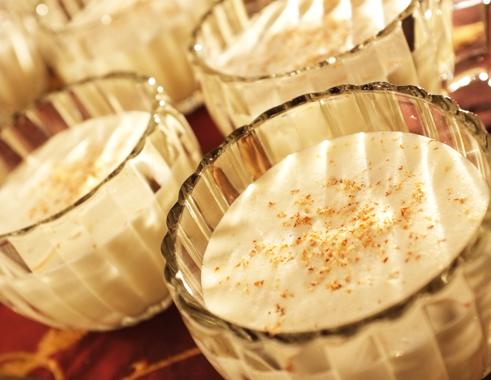

Alton Brown's Aged Egg Nog

Ingredients
- 12 Egg yolks
- 8oz whole milk
- 1 pint whole milk (-8oz)
- 1 Pint Half and Half
- 1 pint heavy cream
- 1 cup Rum (Jamaican) (43abv)
- 1 cup Cognac (45abv)
- 1 cup Bourbon (50abv)
- 1lb sugar
- 1 tsp Nutmeg
Steps
Phase One
- seperate egg yolks, freeze whites in an ice cube tray to save for other uses.
- In a seperate bowl, combine the rum, congnac, and bourbon.
- Add 8ox of milk to the egg yolks. Add 2/3 tsp nutmeg and Sugar. Mix with an immersion blender on low. Avoid pulling air into the mixture.
- Once mixture is smooth, slowly add the alcohol while blending.
- store in a clear glass jar, tightly sealed. Store in the fridge for 30 days. Shake gently every few days.
Phase 2
- Pour misture into a mixing container. Add 2 cups half and half, 2 cups heavy cream, and 1 cup whole milk.
- Add 1/3 tsp nutmeg. Blend well on low with immersion blender.
- transfer into 4 1 quart jars, seal tightly
- Store in the fridge for at least 60 days. Up to 6 months, after that flavours start to mellow.
Home